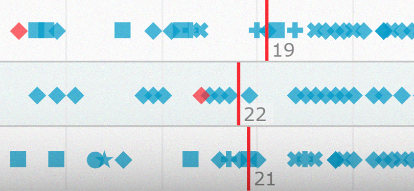

Projects
-

-
-
Why Hungary can't qualify for the World Cup?
The data show because Hungarian football is simple bad.

ATLO is a Budapest-based data journalism and visual content team powered by investigative journalism center Átlátszó. We create data-related graphic content, data visualizations, information graphics and thematic maps. If you have any interesting idea or important topic, just contact us and let’s work together.
The data show because Hungarian football is simple bad.
Attila Bátorfy
head of project and content
Bence Mikola
graphic designer
László Horváth
developer
Márk Tremmel
contributor
Blanka Kovács
contributor
Orsolya Putz
contributor